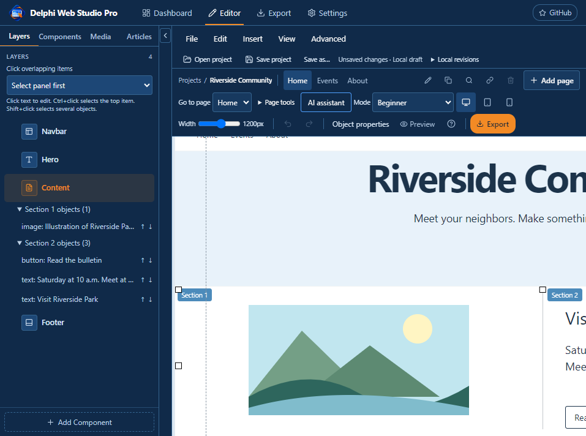
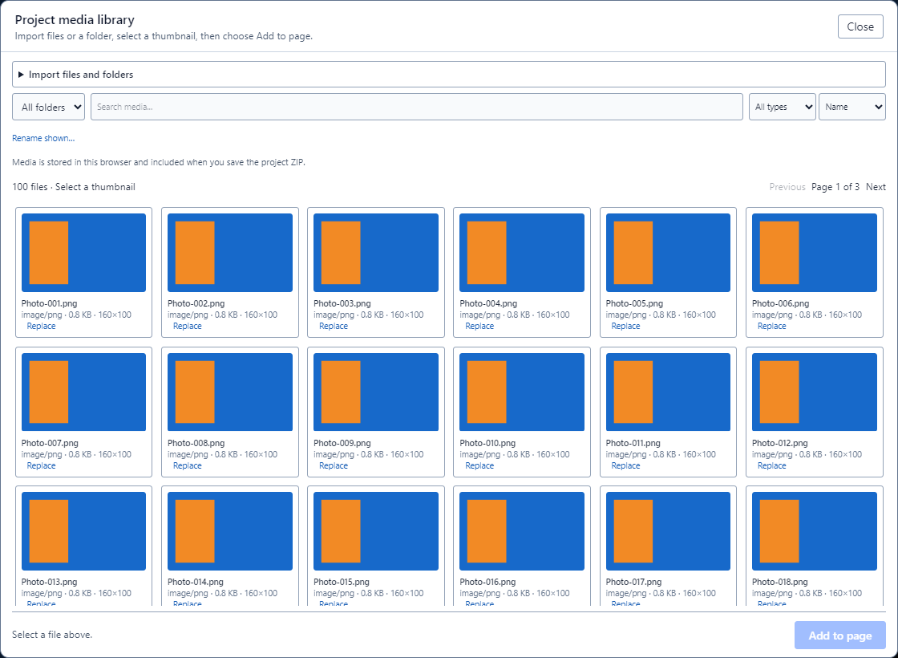
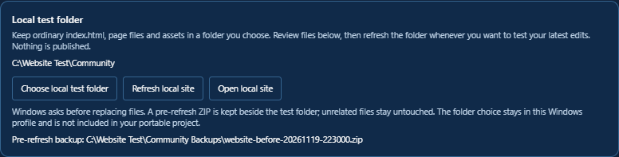

Words, with room to work
Control fonts, colors, paragraphs, bullets and text links. Clean pasted formatting and use Windows spelling suggestions and a personal dictionary.
A visual website editor for Windows
Design and maintain your website visually, right on your desktop. Bring your content together, review it on different screens and export the finished files when you’re ready.
 Enlarge the editor
Enlarge the editor
A familiar place to work
Build the page, organize its content and check the visitor experience in the same workspace. The tools are there for everyday updates as well as a fresh start.

View full screenshotMove, resize and layer objects; edit wording, spacing and links; then check desktop, tablet and phone layouts.

View full screenshotCreate folders and move assets between them while keeping their references on your pages intact.

View full screenshotPrepare a review, refresh a dedicated local folder and open the site in your browser. Publishing stays a separate decision.
Made for the content you maintain
Give a church, community organization or small business the pages it needs, with practical components you can continue to edit.
Control fonts, colors, paragraphs, bullets and text links. Clean pasted formatting and use Windows spelling suggestions and a personal dictionary.
Keep files in folders, build responsive photo galleries and reorder pictures by dragging or assigning a position number. Add captions to enlarged photos.
Add calendars, staff directories with full biographies, contact pages and bulletin libraries with a PDF viewer. Keep navigation and submenus connected.
Review desktop, tablet and phone layouts as you work. Use adjustable columns and responsive components to make the page comfortable to read.
Review descriptions, headings and navigation, inspect supported color contrast and check external link responses. Guided steps support your manual review.
Offer TAtlas website translation through the floating GTranslate widget. Visitors can translate your exported pages; your editor and original wording stay unchanged.
Optional Google Gemini assistance
Google Gemini is the online AI service used by the optional assistant. Ask for help with selected wording, an editable new page or section, or changes to existing components.
Inspect the proposal before applying it, refine your request and use Undo when needed. The result remains ordinary, editable project content.
An API key is a secret credential that connects the editor to your Google AI project. Gemini needs your own saved key, internet access and a Free-tier project with billing disabled. Google controls quotas and availability.
See how AI assistance works View the review screen
View the review screenA guide beside you
Seven illustrated guides walk through everyday editing, complete workflows and the engineering behind the application. Read them as PDF or keep an editable Word copy.
Start with a blank page or a starter
The Windows editor is free and open source. Choose the edition for your computer and keep the illustrated User Guide close by.